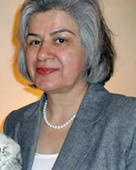

|
|

منصوره بهکیش، همراه همیشگی مادران خاوران و مادران عزادار باز هم در بند!
شنبه28 خرداد 1390
ديشب همه خيالم بودي...
تغییر برای برابری - شيدا شاهپوري- شنيدم، باز هم خبري ديگر از تو، يكشنبه غروب يكي گفت: او را بگيريد، و تو را در ماشين نشاندند و بردند.
چند بار تو را بردند و همه بار براي چه؟ همه ي خيالم تصوير توست، گاهي با آن لبخند دلنشين و گاهي با آن قيافه جدي كه وقتي جدي مي شوي و حرف مي زني لهجه ات مشهدي مي شود. به سالهاي دور بر مي گردم ، سالهايي كه دوشادوش مادر بهكيش كه آن وقت ها راحت تر مي توانست به خاوران بيايد، با يك بغل گل مي آمدي ، گلها را دسته دسته مي كردي و به بچه ها مي دادي تا آنها را روي گورها بگذارند، گورها كه نه روي زمين خشك خاوران، كه هر تكه اش را گوري مي ديديم، و پنج گل را بر مي داشتي و به ياد پنج عزيزت مي گذاشتي.

يادت هست آمدند خاوران را گل و گياه بكارند و تو با مادران ديگر رفتي و حرف زدي كه ما خيابان كشي و گل و گياه نمي خواهيم گور عزيزانمان را نشانمان دهيد و آقاي مسئولي گفته بود به تو كه ليست افرادي را كه اينجا هستند را به ما بدهيد و قيافه تو ديدني بود، با تعجبي كه تمام صورتت را پر كرده بود و صدايت ، نه لهجه ات كه يك دفعه مشهدي شد ، گفتي: ما ، ما ليست بدهيم. مگر ما اين كار را كرديم كه بدانيم چند نفر اينجا خوابيده اند. و با يك واقعا كشدار حرفت راتمام كردي. از تو نپرسيدند تو هم جزو اين مادران هستي يا نه چون آنها مي دانستند كه در سالهاي دور پنج عزيز از خانواده پرجمعيت و گرمت در خاوران خوابيده اند و تو هميشه خواهر عزاداري.
همين دو سه سال پيش بود ، كه با مادر ندا و سهراب و ديگر مادران عزادار در پارك لاله شمع به دست مي رفتي كه كسي گفت: او را بگيريد و باز تو را بردند كه بپرسند چرا؟ و تو باز هم براي هزارمين بار بگويي، خب من خواهر عزادارم، خواهر عزاداري كه پنج عزيزش را از دست داده و مي خواهد، فقط مي خواهد دوباره اين صحنه ها را نبيند و شاهد رفتن عزيز ديگري نباشد.
خب چه قدر بگويي مادر ديگر 90ساله شده و نمي تواند بيايد و هميشه ازمن مي پرسد و مي خواهد من بيايم و به جاي او هم شمع روشن كنم. چه قدر براي تولد مادر زحمت كشيدي فيلم تهيه كردي، عكس گرفتي تا 90 سالگي مادر را در ميان دوستانش، ميان مادران عزادار ديگر كه سالهاست غم و شادي شان را با هم تقسيم مي كنند جشن بگيري و لبخند مادر را ببيني و خنده مادران ديگر را و بنشيني و با چشمان پر از اشك نگاهشان كني.
چه قدر مي خواهي هر جمعه با مادران ديگر به خاوران بروي و چه قدر به همه بگويي بياييد براي احترام به همه عزيزانمان كه اينجا سالهاست خوابيده اند.
چه قدر مي خواهي با مادران ديگر شنبه ها به پاركها بروي و فقط يك شمع روشن كني و بگويي فقط مي خواهم ديگر نشنوم ندا نباشد، سهراب نباشد، هاله نباشد، هدا نباشد و ...
و آن روز كه در سكوت راه مي رفتي چه قدر در دلت گفتي و در دلت فرياد كشيدي كه مي خواهم جوانان اين سرزمين شاد و با دلي پر از امنيت خاطر در همين خيابان ولي عصر راه بروند، سكوت كنند، و فقط بخواهند آزادي را ، آزادي بيان را و آزادي تفكر را و اينكه نخواهند كسي سر هيچ چهار راهي با انگشت نشانشان بدهد كه او را ، او را بگيريد.